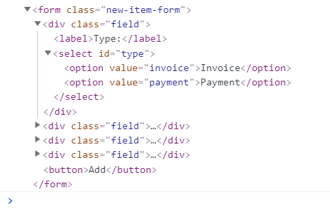
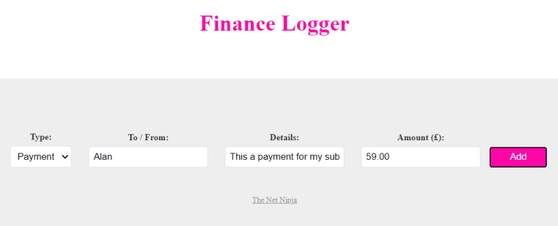
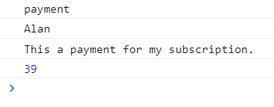
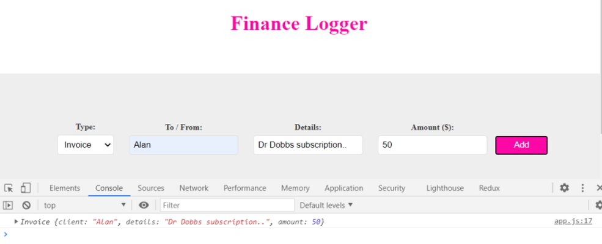
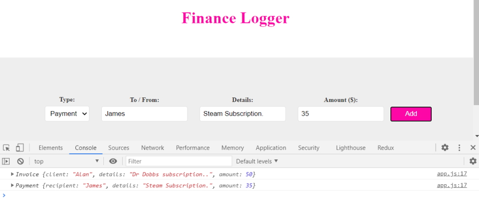
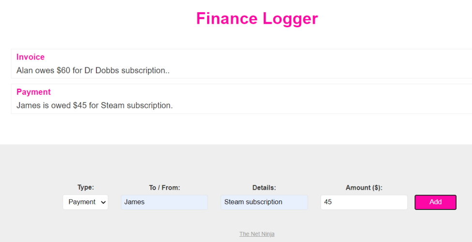
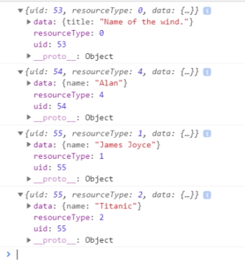

TypeScript is an open-source language which builds on JavaScript, one of the world's most used tools, by adding static type definitions.
Types provide a way to describe the shape of an object, providing better documentation, and allowing TypeScript to validate that your code is working correctly.
Writing types can be optional in TypeScript, because type inference allows you to get a lot of power without writing additional code.
All valid JavaScript code is also TypeScript code. You might get type-checking errors, but that won't stop you from running the resulting JavaScript. While you can go for stricter behavior, that means you're still in control.
TypeScript code is transformed into JavaScript code via the TypeScript compiler or Babel. This JavaScript is clean, simple code which runs anywhere JavaScript runs: In a browser, on Node.JS or in your apps.
Adopting TypeScript is not a binary choice, you can start by annotating existing JavaScript with JSDoc, then switch a few files to be checked by TypeScript and over time prepare your codebase to convert completely.
TypeScript's type inference means that you don't have to annotate your code until you want more safety.
The simplest way to start using Typescript is to create a new project and then run the following commands.
First intialise the project.
npm init
Now install Typescript locally.
npm install typescript@latest
This will allow us to transpile our Typescript code into JavaScript.
We can do this with,
npx tsc sandbox.ts -w
where:
npx runs the local version of Typescript.
sandbox.ts is our Typescript file. This will create the sandbox.js file.
-w watches the Typescript file for changes and recompiles when the file is saved.
We can use a HTML file to run our new JavaScript file or run it through Node.js.
Note: I am running Typescript locally because I had all sorts of drama running Typescript globally. On my PC I have various versions of Visual Studio running and these install their own versions of Typescript. I ended up getting errors because the global version of Typescript was version 1.0 and I couldn't upgrade to a later version without causing more errors.
In Typescript you can write everything that you used to write as JavaScript. For example:
let firstName = 'Alan';
console.log(firstName);
Now if you change the code to the following:
firstName = 27;
console.log(firstName);
You will get an error when the code is transpiled because Typescript is expecting firstName to be a string.
This is a major benefit of Typescript that forces you to use strongly type variables. We can take this one step further by settting the variable type.
let firstName: string = 'Alan';
console.log(firstName);
Now, write some more code.
let firstName: string = 'Alan';
console.log(firstName);
const age : number = 30;
console.log(age);
const isBlackBelt : boolean = true;
console.log(isBlackBelt);
const inputs = document.querySelectorAll('input');
console.log(inputs);
inputs.forEach((input) => {
console.log(input);
});
Results
Alan
30
true
NodeList(3) [input#tofrom, input#details, input#amount]
<input type="text" id="tofrom">
<input type="text" id="details">
<input type="number" id="amount">
The inputs statement grabs all of the input statements in our sample HTML page.
Now, if we look at the sandbox.js file that has been created it looks similar to the .ts file but it has been reduced to basic JavaScript.
sandbox.js
"use strict";
var firstName = 'Alan';
console.log(firstName);
var age = 30;
console.log(age);
var isBlackBelt = true;
console.log(isBlackBelt);
var inputs = document.querySelectorAll('input');
console.log(inputs);
inputs.forEach(function (input) {
console.log(input);
});
This can be used anywhere that JavaScript can run because it has been transpiled into an older version of JavaScript.
Note: Our const types have been transpiled into let types because const is a slightly newer feature in JavaScript.
The main benefit of using Typescript is that it can show you a lot more errors than you will see if you are just using JavaScript.
You can add a type to the arguments to make sure you get the correct argument values.
const circ = (diameter: number) => {
return diameter * Math.PI;
}
console.log(circ(3));
9.42477796076938
In the JavaScript file:
var circ = function (diameter) {
return diameter * Math.PI;
};
console.log(circ(3));
Seeing as we have set the argument as a number in our Typescript function this will tell us if the wrong argument type is sent into the console.log() line and won't allow us to compile.
This is Typescript making sure we are using the correct values for our arguments. It stops errors during development and makes our final JavaScript more robust.
We can create an array and the following code will infer a string array.
let names = ['Alan', 'James', 'Charley'];
names.push('Ethan');
console.log(names);
["Alan", "James", "Charley", "Ethan"]
Or we can add the type.
let names: string = ['Alan', 'James', 'Charley'];
names.push('Ethan');
console.log(names);
["Alan", "James", "Charley", "Ethan"]
A better way of creating an array of strings would be:
const names: string[] = [];
names.push('Alan');
names.push('Ethan');
names.push('Andrew');
console.log(names);
["Alan", "Ethan", "Andrew"]
You can also create an array of numbers.
const ages: number[] = [];
ages.push(68)
ages.push(35)
ages.push(14)
ages.push(9)
console.log(ages);
[68, 35, 14, 9]
You can also create mixed arrays.
const mixed = ['Alan', 68, 'James', 14];
mixed.push('Charley');
mixed.push(9);
console.log(mixed);
(6) ["Alan", 68, "James", 14, "Charley", 9]
We can also create objects.
let item : object;
// can create an object of any type
item = {
name: 'Widget',
colour: 'Brown',
count: 100
}
console.log(item);
{name: "Widget", colour: "Brown", count: 100}
A better way to create an object is to set the variable's types.
let newItem: {
name: string,
colour: string,
count: number
}
newItem = {
name: 'Buckle',
colour: 'Brown',
count: 230
}
console.log(newItem);
Now if we try to add a variable or change an existing variable's type we will generate errors.
This will create an error.
newItem = {
name: 'Buckle',
colour: 'Brown',
count: '230'
}
This will also create an error.
newItem = {
name: 'Buckle',
colour: 'Brown',
count: 230,
size: 'large'
}
I can create a variable and give it a type but not define the value.
let firstName: string;
let age: number;
let isLoggedIn: boolean;
Later in the code I can add values but the variable's values have to be the correct type.
These values will work.
firstName = 'Alan';
age = 68;
isLoggedIn = false
We can use explicit types for arrays as well.
let names: string[];
names = ['Alan', 'James', 'Charley'];
names.push('Ethan');
console.log(names);
(4) ["Alan", "James", "Charley", "Ethan"]
This won't work!
let names: string[];
names.push('Alan')
To be able to push values onto an explicitly typed array we could do this.
let names: string[] = [];
names.push('Alan');
names.push('James');
console.log(names);
Or, if we wanted to create a mixed array we could use union types to specify a number of different types.
const mixed: (string|number|boolean)[] = [];
mixed.push('Alan');
mixed.push(27);
mixed.push(true);
console.log(mixed);
(3) ["Alan", 27, true]
You can also use union types for variables.
let uid: string|number;
uid = '123';
uid= 456;
console.log(uid);
456
There is one more type that we can create. This is the any type that can be useful where we don't know what type we will use and will decide in the future. we may create it as a boolean at first and then change it to a string in the future.
let age: any = 26;
age = 'Widget';
age = true;
age = 27;
console.log(age);
27
This takes away a lot of the advantages we get with Typescript so we should use this sparingly.
We can also create an array with the type of any.
const mixed: any[] = [];
mixed.push('James');
mixed.push(14);
mixed.push(true);
console.log(mixed);
(3) ["James", 14, true]
The project that we have been using so far has a simple workflow containing all files in one folder. For more complex projects we need to set up a different workflow.
In our case we are going to create two new folders
dist
src
Where dist/ will contain the files we will distribute with our project and src will be the files required to create our project. The src files will not be distributed.
dist/ will contain the HTML and CSS files that will run our project.
dist/js will contain the JavaScript files that will run our project.
src will contain one or more Typescript files that will be required to build our JavaScript files.
We need to create a tsconfig.json file to manage our project.
npx tsc --init
This will create a tsconfig.json file with a complete list of options that you can use.
We need to make some modifications to our tsconfig.json file so that it will compile and run successfully.
{
"compilerOptions": {
"target": "es5",
"module": "commonjs",
"outDir": "./dist/js",
"rootDir": "./src",
"strict": true,
"esModuleInterop": true,
"forceConsistentCasingInFileNames": true
},
"include": ["src"]
}
Now we can use the following line to transpile all of our Typescript code files.
npx tsc -w
Note that we don't have to specify the names of all the Typescript files and also if there are multiple files then the JavaScript files will be published in the disc folder.
Note: Any Typescript files that are created in the root folder of the project won't be transpiled into the dist/js folder because of the following line in the tsconfig.json file.
,
"include": ["src"]
This forces the transpiler to only include .ts files that are inside the src folder. This is the behavior that we require.
We are going to add a new test.ts file into the src folder to prove that multiple JavaScript files will be created in the dist/js folder.
console.log('Testing 1.2.3.');
When we save this file Typescript will compile the test.js file to the dist/js folder ready for distribution.
Our project is now set up for a more complex workflow.
When Typescript sees this expression it infers it is a function.
const greet = () => {
console.log('Hello!');
}
We can explicitly type greet as a function.
let greet: Function;
greet = () => {
console.log('Hello!');
}
greet();
Hello!
We can add parameters.
let add = (a: number, b: number) => {
console.log(a + b);
}
add(5, 6);
11
What if we wanted to add an optional parameter?
let add = (a: number, b: number, c?: number) => {
console.log(a + b);
}
add(5, 6);
11
We add a question mark beside the variable name to make it optional.
What if we try and extract the parameter value in this case?
let add = (a: number, b: number, c?: number | string) => {
console.log(a + b);
console.log(c);
}
add(5, 6);
11
undefined
In this case it produces and undefined because we haven't added an argument.
We can also give the parameter a default value.
let add = (a: number, b: number, c: number | string = 12) => {
console.log(a + b);
console.log(c);
}
add(5, 6);
11
12
Note: We have removed the optional question mark, ? because it isn't needed anymore.
Note: If you use optional parameters you should put them at the end of the parameter list.
What if we want to return a value from our function?
Let's create another function.
const minus = (a: number, b: number) => a - b;
const result = minus(25, 17);
console.log(result);
8
In this case when we create a new variable (result) it infers the type from the returned value.
What if we want to explicitly set the return type? We can do this after the parameters.
const minus = (a: number, b: number): number => a - b;
const result = minus(25, 17);
console.log(result);
In most cases this is overkill but for complex functions it can actually add a bit of clarity.
The parameters in functions where a value can be one or more types start to become complex. Have a look at the next two functions.
const logDetails = (uid: string | number, item: string) => {
console.log(`${item} has a uid of ${uid}`);
}
const greet = (user: {name: string, uid: string | number}) => {
console.log(`${user.name} (${user.uid}) says hello!`);
}
logDetails('1234', 'James');
greet({name: 'Alan', uid: '4567'});
James has a uid of 1234
Alan (4567) says hello!
The parameter list can be simplified by using a type alias as you can see in the following function examples.
type StrOrNum = string | number;
const logDetails = (uid: StrOrNum, item: string) => {
console.log(`${item} has a uid of ${uid}`);
}
const greet = (user: {name: string, uid: StrOrNum}) => {
console.log(`${user.name} (${user.uid}) says hello!`);
}
logDetails('1234', 'James');
greet({name: 'Alan', uid: '4567'});
James has a uid of 1234
Alan (4567) says hello!
The type alias makes the parameter list look a bit simpler.
We can also abstract out the object as well.
type StrOrNum = string | number;
type ObjWithName = { name: string, uid: StrOrNum };
const logDetails = (uid: StrOrNum, item: string) => {
console.log(`${item} has a uid of ${uid}`);
}
const greet = (user: ObjWithName) => {
console.log(`${user.name} (${user.uid}) says hello!`);
}
logDetails('1234', 'James');
greet({name: 'Alan', uid: '4567'});
James has a uid of 1234
Alan (4567) says hello!
We have already seen how to sign a type of function to a variable.
let greet: Function;
We can go one step further by setting a function signature.
() => void;
This is a function that passes back nothing, ie, void.
Now, we are going to see some different examples of function signatures.
let greet: (a: string, b: string) => void;
greet = (firstName: string, greeting: string) => {
console.log(`${firstName} says ${greeting}`);
}
greet('Alan', 'Hello!');
Alan says Hello!
The function signature has two parameters and returns a void result.
Note that the two parameter names in the function signature are different to the two parameter names in the actual function. They don't have to be the same. They are just two parameters of type string.
In the function we could add a return type of void as well but we don't have to because the function signature infers a type of void for us.
greet = (firstName: string, greeting: string): void => {
console.log(`${firstName} says ${greeting}`);
}
let calc: (a: number, b: number, c: string) => number;
calc = (numOne: number, numTwo: number, action: string) => {
if (action === 'add') {
return numOne + numTwo;
} else {
return numOne - numTwo;
}
}
const result = calc(7, 6, 'add');
console.log(result);
13
In the function example above we have to add an else statement. If we don't then the functions return type would be void instead of number and this would cause an error.
let logDetails: (obj: {name: string, age: number}) => void;
logDetails = (person: {name: string, age: number}) => {
console.log(`${person.name} is ${person.age} years old.`);
}
logDetails({name: 'Alan', age: 68});
Alan is 68 years old.
In the 3rd example we are passing an object as a parameter.
Once again we could create a type to simplify the function parameter list.
let logDetails: (obj: {name: string, age: number}) => void;
type details = {name: string, age: number};
logDetails = (person: details) => {
console.log(`${person.name} is ${person.age} years old.`);
}
logDetails({name: 'Alan', age: 68});
Alan is 68 years old.
Just like JavaScript we can use Typescript to interact with the DOM.
We have an index.html web page and are now going to create a new Typescript file named app.js to interrogate elements on our web page.
There are a few key differences to working with Typescript that we need to be aware of.
We are going to display the anchor tag on our web page. There is one at the bottom of the page.
const anchor = document.querySelector('a');
console.log(anchor);
<a href="https://www.thenetninja.co.uk">The Net Ninja
This works fine but if we grab an attribute of the anchor tag we will have an issue.
const anchor = document.querySelector('a');
console.log(anchor.href);
This causes an error that tells us that there could be a null reference error.
const anchor: HTMLAnchorElement | null
Object is possibly 'null'.ts(2531)
This happens because Typescript isn't aware of the index.html page.
There are a couple of ways to work around this.
const anchor = document.querySelector('a');
if (anchor) {
console.log(anchor.href);
}
https://www.thenetninja.co.uk/
or:
const anchor = document.querySelector('a')!;
console.log(anchor.href);
https://www.thenetninja.co.uk/
We add an exclamation mark to the end of the .querySelector() expression and this tells Typescript that we know that the anchor tag exista in our web page and the error disappears.
Another benefit of working with Typescript and DOM interaction is that it contains special types for every DOM element. If we hover over the anchor element in our code it will tell us the following.
const anchor: HTMLAnchorElement
This means that when we use the anchor element Typescript knows all of the methods and properties on that type and it's going to make them available to us as intellisense data.
So if we type anchor. it will show all of the methods and properties that are available for use on an anchor tag.
On our web page we have a form and we are now going to try and access elements on that form.
const form = document.querySelector('form')!;
This will give us access to the form and remove the error but what if we have two forms on the web page. How do we know that we have selected the correct form?
We could use a class instead.
const form = document.querySelector('.new-item-form')!;
console.log(form);

Now when we hover over the form the element type is not shown. This is because we are accessing a class not an element so how do we get around this?
We can cast it to be a type of element.
const form = document.querySelector('.new-item-form') as HTMLFormElement;
console.log(form.children);
We can cast it as a HTMLFormElement and now we get all the methods and properties that are available to that tag.
Note: we have to remove the exclamation mark.
Now, we will try to get all of the form values.
// inputs
const type = document.querySelector('#type') as HTMLSelectElement;
const tofrom = document.querySelector('#tofrom') as HTMLInputElement;
const details = document.querySelector('#details') as HTMLInputElement;
const amount = document.querySelector('#amount') as HTMLInputElement;
form.addEventListener('submit', (e: Event) => {
e.preventDefault();
console.log(type.value);
console.log(tofrom.value);
console.log(details.value);
console.log(amount.value);
});


We have one minor issue with the form results. The amount is a string and we want this to read as a number. We can do this with.
console.log(amount.valueAsNumber);
Now in the results you will see the amount value in a blue font in the console meaning that it is a number.
Classes in Typescript are very similar to classes in JavaScript.
As you know a class is a blueprint for an object.
We are going to create an Invoice object.
class Invoice {
client: string;
details: string;
amount: number;
constructor(c: string, d: string, a: number) {
this.client = c;
this.details = d;
this.amount = a;
}
format() {
return `${this.client} owes $${this.amount} for ${this.details}.`;
}
}
const invOne = new Invoice('Alan', 'subscription renewal', 49.99);
const invTwo = new Invoice('James', 'Steam game', 30.00);
console.log(invOne);
console.log(invOne.format());
console.log(invTwo);
console.log(invTwo.format());
Invoice {client: "Alan", details: "subscription renewal", amount: 49.99}
Alan owes $49.99 for subscription renewal.
Invoice {client: "James", details: "Steam game", amount: 30}
James owes $30 for Steam game.
When we are dealing with a number of invoices it would be better to add them to an array of Invoice objects.
We can do this by creating an array of Invoice type objects.
let invoices: Invoice[] = [];
invoices.push(invOne);
invoices.push(invTwo);
console.log(invoices);
(2) [Invoice, Invoice]
0: Invoice {client: "Alan", details: "subscription renewal", amount: 49.99}
1: Invoice {client: "James", details: "Steam game", amount: 30}
length: 2
proto: Array(0)
This only allows us to add objects of type Invoice into our array.
Now that we have created our classes we can change them as well.
invOne.amount = 55.00;
invTwo.amount = 40.00;
invoices.forEach(inv => {
console.log(inv.client, inv.details, inv.amount, inv.format());
});
Alan subscript'on renewal 55 Alan owes $55 for subscription renewal.
James Steam game 40 James owes $40 for Steam game.
We may not want to be able to change these invoice properties so in Typescript we can use access modifiers to limit this behavior.
All classes are public default.
In our class we can add an access modifier to our properties.
readonly client: string;
private details: string;
public amount: number;
Note: making amount public isn't necessary because public is the default.
We can access the properties within the class. for example, the format() method has access to details even though it is private.
Outside of the class the details property is not accessible.
client is readonly and that means that we are not allowed to change the value of client inside or outside of the class.
We can still read the client property in the console.log() output line.
invoices.forEach(inv => {
console.log(inv.client, inv.details, inv.amount, inv.format());
});
In the code above inv.details is not accessible so the code will not compile.
inv.format() also has access to inv.details but in this case because inv.format() is within the class we can access inv.details.
If we modified the code above to:
invoices.forEach(inv => {
console.log(inv.client, inv.amount, inv.format());
});
It will now compile producing the following results.
Alan 55 Alan owes $55 for subscription renewal.
James 40 James owes $40 for Steam game.
There is a shorthand method to creating the properties with access modifiers in our class.
class Invoice {
constructor(
readonly client: string,
private details: string,
public amount: number
) {}
format() {
return `${this.client} owes $${this.amount} for ${this.details}.`;
}
}
This reduces the amount of code we have to write to create a class.
Note: the following constructor will produce errors. We need to have the access modifiers in front of the properties. Therefore, it will not see the properties as public properties.
constructor(
client: string,
details: string,
amount: number
) {}
Note: Modules are a fairly new JavaScript concept and may not work in older browsers.
At present we are writing all of our code in one file. This is okay for small projects but for large projects it becomes unmanageable.
It is better to split our code down into smaller modular files. We could have one file that manages the DOM interactions, another that manages the database interaction and so on. This makes the files much easier to read and update in the future.
The best way we can do this in Typescript is by using the ES6 module system where we can import and export things from different files when we need to. Modern browsers support modules in JavaScript so we can use them in Typescript as well. This won't work in older browsers.
There is a way around this by transpiling your code into one file using Webpack. We won't be doing this at the moment.
We need to make changes to our tsconfig.json file.
{
"compilerOptions": {
"target": "es6",
"module": "es2015",
"outDir": "./dist/js",
"rootDir": "./src",
"strict": true,
"esModuleInterop": true,
"forceConsistentCasingInFileNames": true
},
"include": ["src"]
}
We change the target attribute to es6 and the module attribute to es2015.
We also need to change the script line at the bottom of the index.html page to allow for modules.
<script type="module" src='js/app.js'></script>
Now we are ready to use the module system. The first thing we will do is take out the Invoice class and put it into the Typescript src/classes folder.
export class Invoice {
constructor(
readonly client: string,
private details: string,
public amount: number
) {}
format() {
return `${this.client} owes $${this.amount} for ${this.details}.`;
}
}
We add the word export to the start of the class definition.
We also have to add an import statement to the top of the app.ts file.
import {Invoice} from './classes/invoice.js';
const invOne = new Invoice('Alan', 'subscription renewal', 49.99);
const invTwo = new Invoice('James', 'Steam game', 30.00);
let invoices: Invoice[] = [];
invoices.push(invOne);
invoices.push(invTwo);
invOne.amount = 55.00;
invTwo.amount = 40.00;
invoices.forEach(inv => {
console.log(inv.client, inv.amount, inv.format());
});
If we have done this correctly we should be able to see the console.log() output on the web page.
Alan 55 Alan owes $55 for subscription renewal.
James 40 James owes $40 for Steam game.
A tool we can use in Typescript but can't use in JavaScript is an interface.
An interface allows us to enforce a certain structure of a class or an object. We can use it to describe the methods and properties of an object and the types of those properties.
You might think it sounds very much like a class but an interface doesn't generate objects. We only use an interface to add a structure to a class or object.
We create an isPerson interface with properties and methods.
interface isPerson {
name: string;
age: number;
speak(a: string): void;
spend(a: number): number;
}
const me: isPerson = {
};
The code as it is will come up with an error on the object name me. As the code stands the me object does not comply with the isPerson interface so we have to fill in the methods and properties. The final code is below.
interface isPerson {
name: string;
age: number;
speak(a: string): void;
spend(a: number): number;
}
const me: isPerson = {
name: 'Alan',
age: 68,
speak(text: string): void {
console.log(text);
},
spend(amount: number): number {
console.log(`I spent ${amount}.`);
return amount;
}
};
console.log(me);
{name: "Alan", age: 68, speak: ƒ, spend: ƒ}
The benefit of this is that we can have multiple objects of type isPerson that implement this interface. The other objects can have different values but they must always follow the interface's structure.
We can create another object of type isPerson.
let someone: isPerson;
Later on we could build up the content for the someone variable based on the isPerson interface.
We can also create a new function and use the object we created with the isPerson interface.
interface isPerson {
name: string;
age: number;
speak(a: string): void;
spend(a: number): number;
}
const me: isPerson = {
name: 'Alan',
age: 68,
speak(text: string): void {
console.log(text);
},
spend(amount: number): number {
console.log(`I spent ${amount}.`);
return amount;
}
};
const greetPerson = (person: isPerson) => {
console.log(`Hello ${person.name}.`);
}
greetPerson(me);
In this case the function we created uses the me object that was created with the isPerson interface.
We are going to create a new folder in the src folder named interfaces.
export interface HasFormatter {
format(): string;
}
In the invoice.ts file we need to implement a HasFormatter interface.
import {HasFormatter} from '../../src/interfaces/HasFormatter.js';
export class Invoice implements HasFormatter {
constructor(
readonly client: string,
private details: string,
public amount: number
) {}
format() {
return `${this.client} owes $${this.amount} for ${this.details}.`;
}
}
We also need to create a payment class.
import {HasFormatter} from '../../src/interfaces/HasFormatter.js';
export class Payment implements HasFormatter {
constructor(
readonly recipient: string,
private details: string,
public amount: number
) {}
format() {
return `${this.recipient} is owed $${this.amount} for ${this.details}.`;
}
}
Both of these classes must inherit from the HasFormatter interface.
Now change the app.ts file.
import {Invoice} from './classes/invoice.js';
import {Payment} from './classes/payment.js';
import {HasFormatter} from './interfaces/HasFormatter.js';
const form = document.querySelector('.new-item-form') as HTMLFormElement;
const type = document.querySelector('#type') as HTMLSelectElement;
const tofrom = document.querySelector('#tofrom') as HTMLInputElement;
const details = document.querySelector('#details') as HTMLInputElement;
const amount = document.querySelector('#amount') as HTMLInputElement;
form.addEventListener('submit', (e: Event) => {
e.preventDefault();
let doc: HasFormatter;
if (type.value === 'invoice') {
doc = new Invoice(tofrom.value, details.value, amount.valueAsNumber);
} else {
doc = new Payment(tofrom.value, details.value, amount.valueAsNumber);
}
console.log(doc);
});


Previously we rendered our output to the console window. Now we are going to render the results to an unordered list. Each invoice or payment will appear in a list item.
We create a list template file as a new class to render the li element on a page. This is inserted into the ul tag on the index.html web page.
<!-- output list -->
<ul class="item-list">
</ul>
import { HasFormatter } from "../interfaces/HasFormatter";
export class ListTemplate {
constructor(private container: HTMLUListElement){}
render(item: HasFormatter, heading: string, pos: 'start' | 'end'){
const li = document.createElement('li');
const h4 = document.createElement('h4');
h4.innerText = heading;
li.append(h4);
const p = document.createElement('p');
p.innerText = item.format();
li.append(p);
if(pos === 'start'){
this.container.prepend(li);
} else {
this.container.append(li);
}
}
}
Now we will reformat the app.ts files so that we can render the form contents to the web page.
import {Invoice} from './classes/invoice.js';
import {Payment} from './classes/payment.js';
import { ListTemplate } from './classes/ListTemplate.js';
import {HasFormatter} from './interfaces/HasFormatter.js';
const form = document.querySelector('.new-item-form') as HTMLFormElement;
const type = document.querySelector('#type') as HTMLSelectElement;
const tofrom = document.querySelector('#tofrom') as HTMLInputElement;
const details = document.querySelector('#details') as HTMLInputElement;
const amount = document.querySelector('#amount') as HTMLInputElement;
// list template instance
const ul = document.querySelector('ul')!;
const list = new ListTemplate(ul);
form.addEventListener('submit', (e: Event) => {
e.preventDefault();
let doc: HasFormatter;
if (type.value === 'invoice') {
doc = new Invoice(tofrom.value, details.value, amount.valueAsNumber);
} else {
doc = new Payment(tofrom.value, details.value, amount.valueAsNumber);
}
list.render(doc, type.value, 'end');
});
We create new invoice and payment records and should see the results in the unordered list.

Generics allow us to create reusable blocks of code that can be used with different types.
As an example we are going to take in an object and create a new object from it that contains a new user Id (UID).
const addUID = (obj: object) => {
let uid = Math.floor(Math.random() * 100);
return {...obj, uid};
}
let docOne = addUID({name: 'Alan', age: 68});
console.log(docOne);
{name: "Alan", age: 68, uid: 50}
Run it again.
{name: "Alan", age: 68, uid: 52}
This function brings in an object of any type and add a UID to the object. It returns the new object with a UID and this should be different every time we refresh the page.
It seems to be working correctly but if you try to access the .name property of the new object you will get an error.
console.log(docOne.name);
src/app.ts:39:22 - error TS2339: Property 'name' does not exist on type '{ uid: number; }> '.
39 console.log(docOne.name);
This happens because the object doesn't know about name, age or type. We can combat this by using a generic.
const addUID = <T>(obj: T) => {
let uid = Math.floor(Math.random() * 100);
return {...obj, uid};
}
let docOne = addUID({name: 'Alan', age: 68});
console.log(docOne.name);
Alan
This allows us to capture the objects properties and then when we want to use a property in the console statement it will work.
This function allows us to bring in in an object of any type and return it with a new object containing a UID.
There is still a minor problem with our objects. If we create a new variable and run the function again it will access a string as an object and the output will show the original string as an object and this makes no sense.
let docOne = addUID({name: 'Alan', age: 68});
let docTwo = addUID('James');
console.log(docOne.name);
console.log(docTwo);
Alan
{0: "J", 1: "a", 2: "m", 3: "e", 4: "s", uid: 95}
We can fix this by adding the following to the generic object.
const addUID = <T extends object>(obj: T) => {
let uid = Math.floor(Math.random() * 100);
return {...obj, uid};
}
let docOne = addUID({name: 'Alan', age: 68});
let docTwo = addUID('James'); // error
console.log(docOne.name);
This will now show the second function call as passing in a string instead of an object. This is shown as an error.
We could also extend this generic object even more by specifying that the object has to have a property of name with a type of string.
const addUID = <T extends {name: string}>(obj: T) => {
let uid = Math.floor(Math.random() * 100);
return {...obj, uid};
}
let docOne = addUID({name: 'Alan', age: 68});
console.log(docOne.name);
We create an interface.
interface Resource {
uid: number;
resourceName: string;
data: '????';
}
For us to use this interface we must have an object that has the three properties uid, resourceName and data.
We want the data property to be flexible. We want it to be able to use different types. So in this case we want to make the property generic and we can do this by passing in a generic to the Resource interface. Then we make data of type T.
interface Resource<T> {
uid: number;
resourceName: string;
data: T;
}
const docThree: Resource<string> = {
uid: 1,
resourceName: 'person',
data: 'Alan'
}
console.log(docThree);
{uid: 1, resourceName: "person", data: "Alan"}
We can change this interface to an object.
interface Resource<T> {
uid: number;
resourceName: string;
data: T;
}
const docFour: Resource<object> = {
uid: 1,
resourceName: 'person',
data: { name: 'James'}
}
console.log(docFour);
{uid: 1, resourceName: "person", data: {…}}
data: {name: "James"}
resourceName: "person"
uid: 1
proto: Object
We could even add a string array as our Resource type.
const docFive: Resource<string[]> = {
uid: 1,
resourceName: 'family',
data: ['Alan', 'James', 'Charley ']
}
console.log(docFive);
{uid: 1, resourceName: "family", data: Array(3)}
data: (3) ["Alan", "James", "Charley "]
resourceName: "family"
uid: 1
proto: Object
Now we are going to learn how to use enums. First, we change the Resource interface to include a resourceType which is a number that is used to hold a specific type of resource, for example 3 could equal a book title, 2 could be a person.
The more of these resource types that you have, the harder it is to remember what each number stands for. This is where enums come in handy. An enum is a descriptive constant that is used to describe a list of items.
In the ResourceType enum below the items in the list start with an index of 0 so 0 stands for a BOOK type and 4 is a Person.
enum ResourceType { BOOK, AUTHOR, FILM, DIRECTOR, PERSON };
interface Resource<T> {
uid: number;
resourceType: ResourceType;
data: T;
}
const docOne: Resource<object> = {
uid: 53,
resourceType: ResourceType.BOOK,
data: { title: 'Name of the wind.'}
}
const docTwo: Resource<object> = {
uid: 54,
resourceType: ResourceType.PERSON,
data: { name: 'Alan'}
}
const docThree: Resource<object> = {
uid: 55,
resourceType: ResourceType.AUTHOR,
data: { name: 'James Joyce'}
}
const docFour: Resource<object> = {
uid: 55,
resourceType: ResourceType.FILM,
data: { name: 'Titanic'}
}
console.log(docOne);
console.log(docTwo);
console.log(docThree);
console.log(docFour);

Tuples are similar to arrays but there is one major difference. Once an item has been added to a tuple its position is fixed.
First we will create an array.
let arr = ['Alan', 43, true];
We know that we can change a value in an array.
arr[0] = true;
We also know that we can do this because any value in the arr[] array can be either a string, number or boolean. The array can be flexible once we have assigned the array types.
To define a tuple.
let tup: [string, number, boolean] = ['Alan', 75, false];
tup[0] = 'James'; // works
tup[0] = 43; // fails
Once I have defined a tuple I can't change the type in a particular position, i.e. tup[0] can't be a number or boolean, only a string.
This would work.
tup = ['James', 14, true];
This wouldn't work.
tup = ['James', 14];
So the types are fixed once we define a tuple.
A more realistic example of a tuple would be.
let student: [string, number];
student = ['Charley', 123456];
We can now use tuples in our Finance Logger program. First we will create an array to show you that they don't work.
let values = [tofrom.value, details.value, amount.valueAsNumber];
if (type.value === 'invoice') {
doc = new Invoice(...values); // causes an error
The spread ...values in this case doesn't work because the position in an array doesn't know the first value is a string, the second a string and the third a number as they are in our invoice and payment constructors.
If we change this to a tuple then it will work. You can see this in our final code.
import {Invoice} from './classes/invoice.js';
import {Payment} from './classes/payment.js';
import { ListTemplate } from './classes/ListTemplate.js';
import {HasFormatter} from './interfaces/HasFormatter.js';
const form = document.querySelector('.new-item-form') as HTMLFormElement;
const type = document.querySelector('#type') as HTMLSelectElement;
const tofrom = document.querySelector('#tofrom') as HTMLInputElement;
const details = document.querySelector('#details') as HTMLInputElement;
const amount = document.querySelector('#amount') as HTMLInputElement;
// list template instance
const ul = document.querySelector('ul')!;
const list = new ListTemplate(ul);
form.addEventListener('submit', (e: Event) => {
e.preventDefault();
let doc: HasFormatter;
let values: [string, string, number];
values = [tofrom.value, details.value, amount.valueAsNumber];
if (type.value === 'invoice') {
doc = new Invoice(...values);
} else {
doc = new Payment(...values);
}
list.render(doc, type.value, 'end');
});
Once we have made these changes we should test our app again to make sure it is still working.